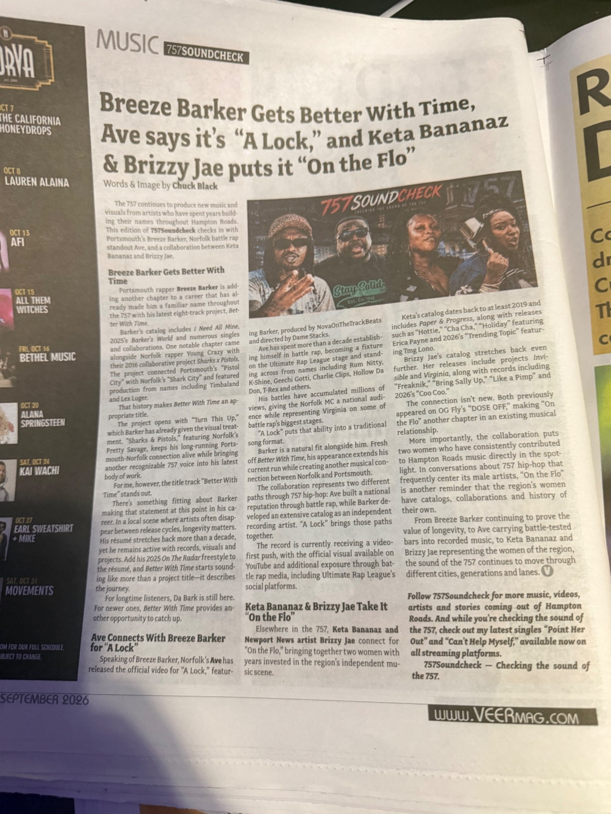

September 2026 · VEER Magazine
Breeze Barker Gets Better With Time, Ave Says It’s “A Lock,” and Keta Bananaz & Brizzy Jae Put It “On the Flo”
By Chuck Black | 757Soundcheck
Portsmouth and Norfolk artists connect across generations, battle rap and women-led collaborations.

As Published in VEER Magazine
Photograph of the original printed article, including the byline and magazine layout.

This portfolio page documents a published VEER Magazine contribution. The full article text can be added after republication permission is confirmed.